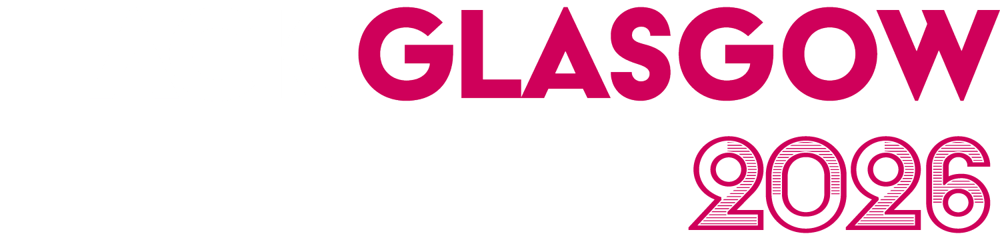
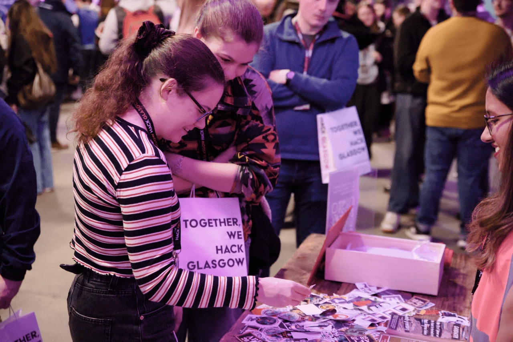
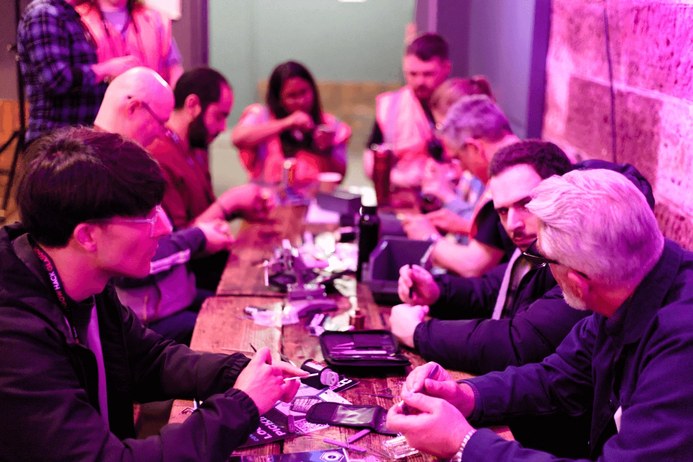
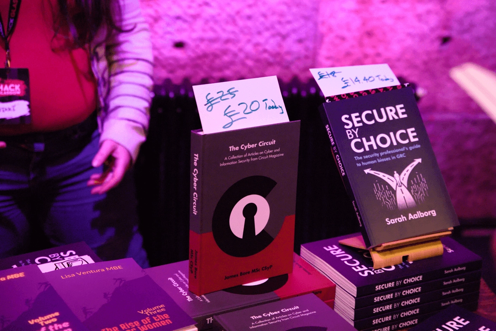
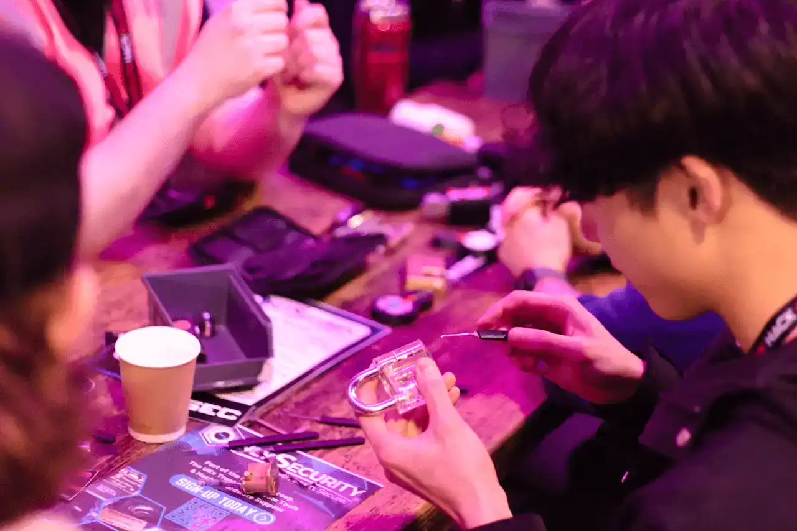

-

Our sophomore effort
After the resounding success of Hack Glasgow 2025, we're back for 2026!
Often referred to as Europe's friendliest city, Glasgow is Scotland's home of innovation, culture, science, and technology. Well renowned for their grit and determination, the perceived mindset of Glaswegians is not too dissimilar to that of the hacker community, making it the perfect city to host Scotland's premier community-led information security conference.
Scheduled for Saturday 15th August 2026, Hack Glasgow is a single day event boasting two parallel speaking tracks, villages, a central and generously-sized sponsor area, and exclusive afterparty for attendees, speakers, crew, and sponsors. Food (both lunch and dinner) will be available for all who attend, with tea and coffee provided throughout the day.
A full transparency report of the event will be available to view once the conference has finished. Our stats page is updated regularly with relevant information.
DATE Saturday 15th August 2026
LOCATION Citizens Theatre, Glasgow, G5 9DS
"We're all fae somewhere"
-
We're pleased to say the sticker & swag stall has returned for 2026! If you've never seen a sticket stall at a conference before, the idea is simple - grab some swag or stickers and donate a small amount of money to our chosen charity. This year we've chosen to support the charity Refuweegee.
Refuweegee was set up by Selina Hales in December 2015 to provide a warm welcome to forcibly displaced people arriving in Glasgow. As a result of the amazing response from people in Glasgow and beyond, they have provided over 10,000 community-built, personal welcome packs and emergency support packs to people all over Glasgow and across Scotland.
Donations welcome on our JustGiving page.

Speakers
Hack Glasgow are delighted to welcome 19 incredible speakers, delivering 16 talks, and 2 workshops, at our 2026 event. Without them, Hack Glasgow 2026 wouldn't have been nearly as much of a success - thanks to all of them for speaking.

Scott McCracken

rand0h

Aaron Kelly

Jinto Antony

Ken Munro

Lauren Spokes

Liam Follin (gr4y-r0se)

Gabrielle Hempel

Vi

Chris Bore

Ehren Osborne

Rishi (@rxerium)

Alex Close

Marie Dubremetz /
Helen of Troy

Cian Heasley

Seán Guthrie

Ryan Standbridge

Andy Gill

Michael Reimsbach
Villages & Vendors
-
After the positive feedback of last year's book stall, we're pleased to say Security Blend Books are returning for 2026! Not only that - this year we also have local hot sauce vendor, and a Hack Glasgow crew favourite, Dr Ged's ready to add a bit of spice to the day.
-
As if that wasn't enough, we also have a dedicated lockpicking village, provided by KSEC Worldwide, and CTF, provided by one of our sponsors Sapphire. Whether you're a first time lockpicker, veteran, or curious about the Sapphire CTF - head to our villages room to find out more!



Crew
Volunteers are the lifeblood of any community conference, and Hack Glasgow is no different. We were blown away that all of our 2025 crew wanted to return this year to help make Hack Glasgow 2026 a success. Each of these wonderful humans donate their time, skills, and passion to make Hack Glasgow 2026 a success and for that, they have our eternal gratitude.
Let's get buck'd up at the afterparty
We're pleased to say the sticker & swag stall has returned for 2026! If you've never seen a sticket stall at a conference before, the idea is simple - grab some swag or stickers and donate a small amount of money to our chosen charity. This year we've chosen to support the charity Refuweegee.
Refuweegee was set up by Selina Hales in December 2015 to provide a warm welcome to forcibly displaced people arriving in Glasgow. As a result of the amazing response from people in Glasgow and beyond, they have provided over 10,000 community-built, personal welcome packs and emergency support packs to people all over Glasgow and across Scotland.
Donations welcome on our JustGiving page.
2026 Schedule
Conference Tracks
-
Stage 109:00 - 09:45 Doors Open & Registration09:45 - 10:00 (15 min) Hack Glasgow 2026 opening remarks Hack GlasgowOpening remarks by the Hack Glasgow organisers10:00 - 10:25 (25 min) Redlining the SOC: The Need for Speed in Cyber Defense Gabrielle HempelAs attackers increasingly leverage AI to automate, the timeline of cyber attacks is compressing. What once unfolded over days or weeks now happens in minutes. In this environment, speed is no longer a competitive advantage for defenders but a baseline requirement.
Security Operations Centers (SOCs) are being pushed to operate at unprecedented velocity to match these attackers, but many are not designed for sustained high-speed decision-making. Faster detection and response can improve outcomes, but it can also amplify false positives, accelerate poor decisions, and introduce operational instability if not implemented carefully.
This talk explores the evolving role of speed in modern cyber defense, examining how AI is reshaping both attacker and defender dynamics. It introduces practical strategies for building a high-velocity SOC that maintains accuracy, control, and resilience: focusing on detection quality, feedback loops, and measured automation. Attendees will leave with a framework for operating at speed without sacrificing effectiveness.10:30 - 11:25 (55 min) Scientific Hooliganism: The History of Hacking Liam Follin (gr4y-r0se)We focus so much on the next great exploit, when have we looked back to see where we come from? Let me take you on a journey back through time, to the first 'hack' ever pulled off. Then, wander with me as we trace the history of our storied profession, from thousands of years ago, all the way to the modern day.
I choose to define hacking as "subverting the rules of a system, in order to force the system to behave in a manner not intended by its creator". This, to me at least, is the hacker mindset - a burning curiosity to make things behave in a way we are told they should not be able to. It is armed with this definition, that I explore the history of hacking, going back through the ages, addressing the incident in 1903 (from which we get the title of this talk), or even to 1834, when the first real 'cyber attack' was pulled off. We go back even earlier than this, observing how the techniques we use today have their roots in the (mis)behaviour of ancient civilisations.
I hope we can learn from the past, to help us shape the future of our great industry. Or, at the very least, we can pay homage to the hackers that came before us, as they laid the groundwork for what we all get to do today.11:30 - 11:55 (25 min) The Era of the Self-Propagating Cloud Worm: Dissecting the "Shai-Hulud" Campaigns Scott McCrackenThe distinction between "code security" and "cloud security" has evaporated. In late 2025, the "Shai-Hulud" campaigns demonstrated a significant evolution in adversary tradecraft: the weaponization of the open-source ecosystem to launch self-propagating worms that pivot from development environments to cloud control planes. This talk dissects the anatomy of this campaign, which compromised over 25,000 repositories and 350 organisations. We will provide a deep dive into the adversary’s use of automation to scale infections at a rate of 1,000 repositories every 30 minutes, their use of "cross-victim exfiltration" to obfuscate attribution, and the deployment of novel persistence mechanisms like GitHub Discussion backdoors. Attendees will gain a technical understanding of how supply chain attacks have shifted from static malicious packages to dynamic, environment-aware worms.
Summary & Tactical Analysis:
1. Shift in Focus: The CI/CD Pipeline as the Primary Target
Traditional adversary models assume the target is a production server or a developer laptop. Our analysis of the Shai-Hulud infection data reveals a decisive shift in adversary focus toward the build pipeline.
• Environment Fingerprinting: We analysed the malware’s execution logic, discovering distinct behavioural branches based on the environment. The malware checks environment variables (e.g., process.env.GITHUB_ACTIONS, process.env.BUILDKITE) to determine if it is running in a CI environment.
• Synchronous Execution: In CI environments, the malware forces synchronous execution to ensure payload delivery completes before the ephemeral runner terminates. This "environment awareness" represents a maturation in supply chain malware, designed specifically to exploit the trust implicit in automated build processes.
2. Tactical Evolution: Automation and Speed
The Shai-Hulud campaign is a case study in how adversaries are using automation to outpace human response teams.
• The Velocity of Compromise: Incident data shows that the worm replicated at a rate of approximately 1,000 new malicious repositories every 30 minutes.
• AI-Generated Payloads: Forensic analysis of the malicious scripts (setup_bun.js) suggests the adversary utilised AI to generate payload variations. We observed distinct stylistic patterns - some seemingly AI-generated, others copy-pasted - indicating the adversary is using LLMs to lower the barrier to entry and rapid-fire polymorphic code to evade static analysis.
3. New Tradecraft: Cross-Victim Exfiltration
Perhaps the most significant shift in behavior observed is the technique of "Cross-Victim Exfiltration," which complicates attribution and takedowns.
• The Tactic: Rather than exfiltrating data to a single attacker-controlled server, the worm utilised the credentials of Victim A to create a public repository, which then served as the exfiltration drop-site for Victim B’s secrets.
• The Impact: This technique turns victim infrastructure into part of the attack distribution network. Defenders looking for "unusual outbound traffic" to known bad IP addresses failed to detect the exfiltration because the traffic was directed toward legitimate, high-reputation GitHub domains owned by other compromised organisations.
4. Novel Persistence: The "Discussion" Backdoor
The presentation will detail a previously unseen persistence mechanism discovered during our reverse engineering of the Shai-Hulud payload.
• Mechanism: The malware injects a workflow file (discussion.yaml) that triggers only when a new "Discussion" is created in the repository.
• Implication: This allows the adversary to re-execute arbitrary code on the compromised machine simply by posting a comment in the repository's discussion tab, bypassing standard triggers like push or pull_request that are more heavily monitored. While we successfully validated this exploit in a lab setting, it represents a dangerous evolution in "living off the land" within SCM platforms.
Conclusion:
The Shai-Hulud campaign signals that adversaries have successfully bridged the gap between code repositories and cloud runtime environments. By analysing these shifts - from environment-aware execution to cross-victim obfuscation - defenders can better anticipate the next generation of automated supply chain threats.
Sources:
https://www.wiz.io/blog/shai-hulud-npm-supply-chain-attack
https://www.wiz.io/blog/shai-hulud-2-0-aftermath-ongoing-supply-chain-attack
https://www.wiz.io/blog/shai-hulud-2-0-ongoing-supply-chain-attack
https://www.wiz.io/blog/github-attacks-pat-control-plane12:00 - 13:00 (60 min) Lunch13:00 - 13:55 (55 min) The Hunted Becomes the Hunter: Catching Red Teamers and Pentesters and Spotting Adversarial Patterns Andy Gill, Alex CloseIn this dual-perspective session, a red teamer and blue teamer join forces to pull back the curtain on the cat-and-mouse game between attackers and defenders. By presenting both sides of the same example engagement, we'll show how easy it is to spot pentesters in the wild, what mistakes give them away, and how SOC analysts can use that knowledge to tell the difference between authorised testing and genuine threats, cutting false positives and keeping focus on what matters.
We'll walk through the same scenarios from opposite sides of the fence, covering the tradecraft, the slip-ups, and the detection opportunities that only become clear when you understand both viewpoints. From the red team side, that means being honest about the OPSEC failures that creep in under real engagement conditions, the tool signatures we know defenders can spot and hope they won't, and the gap between how pentesters work and how real adversaries actually operate.
From the blue team side, we'll cover what defender visibility actually looks like during an example engagement, why testers behave differently to regular users, and how context determines whether an alert is worth acting on or just noise.
Real adversaries don't always operate the way pentesters do, and that gap matters for detection. We'll look at why some approaches hold up against both and others don't, including how living-off-the-land techniques appear from each side of the fence, and what lateral movement and credential usage actually looks like when it's genuine compromise rather than a scheduled test.
Environment-aware detection outperforms generic rule sets, and we'll back that up with case studies from both perspectives: authorised activity that triggered alerts and real threats that didn't. We'll also cover how red team feedback sharpens detection logic over time and keeps alert fatigue from becoming a coverage problem.14:00 - 14:55 (55 min) Farewell Windows 10, glory to Linux! A tragedy in 2 acts. Marie Dubremetz / Helen of TroyOn October 14, 2025, billions of people received an ultimatum: pay 25 pounds or see their computer security compromised. This 'virus,' pre-installed on machines ten years earlier, triggered a dreaded ransomware. You guessed it, it's called Windows 10. Still present on over 400 million machines too old to be updated, it represents a major security risk. Following a study of the technical, environmental, and political consequences of the end of Windows 10, Helen of Troy herself will remind us how Microsoft and Windows act as a Trojan horse within our computers and our institutions. She will also provide a quick overview of the best Linux distributions and alternative free software to evict as much as possible Microsoft from our digital walls. And like Antigone before her, she will encourage the world to defy the scandalous disposal of our ageing hardware.
_As Helen once brought ruin dressed in beauty's sacred guise,
So Windows comes with marketing that hides monopolies' lies.
When your machine arrives with Windows pre-installed at birth,
There come with it a dozen programs of questionable worth!
And push by push, warnings, pop-ups, defaults set...
Dark patterns woven into one entangling net.
A gentle nudge becomes a guided way
Until the path becomes the only way._15:00 - 15:30 (30 min) Coffee break15:30 - 16:25 (55 min) Securing the connected skies: Lessons from real-world aviation testing Ken MunroModern aircraft are among the most connected machines on earth, combining IT, operational technology, and advanced communication systems. This connectivity delivers efficiency and innovation but also creates new challenges for security and safety.
In this session, Ken Munro draws on years of practical testing and collaboration across the aviation sector to look at how connectivity impacts resilience, from electronic flight bags and wireless maintenance systems to passenger Wi-Fi and satellite communications. He explains how security findings are identified, disclosed responsibly, and addressed in partnership with manufacturers, airlines, and regulators.16:30 - 17:25 (55 min) It Takes A Hardware Village - The Making of the Whose Slide 10 Year Anniversary Badge rand0hTo build or not to build? Well, after the first time you make an LED go blink, that isn’t even a question. Things escalate exponentially after that first hardware success. It took me 6 months from the first time I really dove into a kit from HackerBoxes.com, fumbling the entire way, to creating my first ever badge for the 10 year anniversary for my Whose Slide Is It Anyway contest at DEF CON 34.
This talk begins at the beginning, from re-learning how to solder a single pin, to staring at a KiCad screen questioning any positive thing my mother ever told people about me. I will lay bare every failure that led to every success in the goal of putting some bling around the necks of our contestants.
Ultimately, this is a talk about community. No amount of Google searches, no stack of datasheets, nor any number of AI prompts can match the criticality of being able to lean on a community of makers all hell bent on conquering code and electricity. To get from prototype to PCB, it truly takes a hardware village.17:30 - 17:50 (20 min) Hack Glasgow 2026 closing remarks Hack GlasgowHack Glasgow organiser closing remarks -
Stage 209:00 - 09:45 Doors Open & Registration09:45 - 10:00 (15 min) Hack Glasgow 2026 opening remarks (Stage 1) Hack GlasgowOpening remarks by the Hack Glasgow organisers10:00 - 10:25 (25 min) Xterminating Liability through Spreadsheet Malware Aaron KellyWhat does compliance and accounting have in common? We both have a platform for everything but still default to using Excel. Why? Laziness, cost, ease of use (allegedly) and we're just used to it. Throughout this talk, I'm going to go over all the different ways that I've implemented an ISMS and additional security standards, why I keep going back to spreadsheets even when other tools exist. Death by spreadsheet is something we all experience at some point, and you then get the choice to embrace chaos, and begin to evangelise to all the holy ways of VBA, or you can run and hide, and justify those expensive compliance platforms.10:30 - 11:25 (55 min) Six Years of IPv6 ViAfter six long years, I've submitted my PhD thesis thesis on 'Strategies for Scanning the IPv6 Address Space'. I'd love to share a few highlights of stuff I've learnt in that time, focusing on these themes:
- 'Ethical scanning of IPv6 scanning is difficult (but important!)': a short tour of my experimental setup I used to run IPv6 scans (rough around the edges, but lovingly crafted), and a few papers which were very important to my work over the past few years. Very happy to bring my printed copies of these to the talk as props, they're covered in all sorts of post-it notes and handwritten notes at this point.
- 'Rate-limiting is vital': sounds like obvious advice, but IPv6 defences are often not up to the standard of IPv4. Rate-limiting at the recipient end of unsolicited IPv6 scans does a lot to limit reconnaissance - it's no longer enough to assume we're safe because it's a large address space, it's a niche protocol, we have network address translation (NAT), etc. I have some scans that show how we can detect rate-limiting thresholds and address allocation patterns in different networks with no prior info.
- 'IoT devices are IPv6 capable, but at what cost?': this is a more detailed look at one of the papers in the first section ('One Bad Apple Can Spoil Your IPv6 Privacy' - Saidi et al., 2022), plus additional work I did for address analysis (and, hopefully, some actual IoT scans). IPv6-enabled IoT devices can be a hazard in terms of user privacy from IPv6 addresses alone - some big name brands still embed MAC addresses in public IPv6 addresses, which can be used to track users across different networks even if every other device on their network uses IPv6 privacy addresses.
- 'One loudmouth can expose the entire operation': this section is original work, building on the previous section. An unexpected side-effect of insecure MAC-derived IPv6 addresses is that a single sign-in attempt from a suspected IoT IPv6 address can reveal botnet-like sign-in activity - we can use info from this one sign-in attempt to see many other IPv4 and IPv6 addresses attempting similar sign-ins across large numbers of accounts.
- 'IPv6 should be part of the blue team toolbox': it's no longer a niche, hobbyist protocol, (un)fortunately - it's really important for fellow blue teamers to understand that malicious behaviour is happening over IPv6, how to analyse it in logs, and how to handle IPv6 IoCs effectively. It might also be useful for red teamers to know there's probably gaps in the IPv6 fence...
- 'Conclusions': IPv6 scans are hard to run, but there's a lot of us doing them. IPv6 is still not implemented securely in IoT devices, which has positives and negatives. Evil over IPv6 is no longer theoretical and needs to be defended against.11:30 - 11:55 (25 min) Colour Monsters, and Listening to Vicky Chris BoreListening is not so much a key skill as a necessary task in cyber security: even if you're not good at it you should still do it.
I wasn't, once, till the incident with Vicky made so ashamed I knew I should be. I'm still not but I try.
In (semi) retirement I now work at preschool: where listening, and supporting, and helping deal with emotional and intellectual and physical challenges are a really big part of the job.
Here I will talk about how we can make time and space to listen, and to let people be heard, and in so doing make sure Vicky doesn't become the most vulnerable point in our attack surface. (Also, of course, treating her like human being).12:00 - 13:00 (60 min) Lunch13:00 - 13:25 (25 min) Ghost in the Hiring Machine: How to Spot Fake Personas Before They're on Your Payroll Michael Reimsbach, Rishi (@rxerium)People are getting hired and trusted every day. Some of them do not exist at all, yet they still pass interviews, collect paychecks, and gain access to sensitive systems. Campaigns attributed to the DPRK have shown that this threat is very real. So how do you catch a ghost with a resume?
Attendees will learn practical OSINT techniques for spotting fake personas and receive a checklist for thorough background checks. They will see these methods applied through two cases based on a true story, illustrating how these personas succeeded, how one could have been prevented, and where OSINT reaches its limits.
These techniques not only help attendees detect fake personas but also provide practical ways to protect their own privacy and control what personal information is visible online.13:30 - 13:55 (25 min) Please, oh please, stick to the RFCs Ehren Osborne"Please, oh please, stick to the RFCs" is both my technical recommendation and a plea for my sanity while testing certain web applications. My talk will firstly explore some pre-requisites, such as; My path to being a web application tester, what an RFC is and what circumstances made me realise that this needed to be heard.
RFCs are written to guide the usage and application of protocols, with the HTTP-related RFCs being the main focus. I will highlight parts from the RFC that directly relate to vulnerability classes application frequently see and discuss how just like a software update, RFCs that are obsoleted, are done so for a good reason.
While I’m sure there will be at least one person in Leeds (most likely a colleague or friend I’ve convinced to attend), who would enjoy a pure RFC discussion, I prefer my talks to be practical. They’re built around stories and scenarios that shaped my mindset, including the path and people who influenced me along the way. Importantly, I will share real-life examples from tests I’ve conducted to back up my points and to show both how interesting the vulnerabilities caused by ignoring RFCs can be, and how frustrating they are to test in practice.
For the newer generation (either getting into or starting) of testers, you will hopefully learn a bit about RFCs, could application practice and hear some cool stories which may inspire a couple more web application testers!
For the current testers, particuarly the app ones, you will share my pain of non-sensical application behaviour impacting testing, see a couple more cool war stories and might learn just a little bit more about some hidden details in the RFC!
So whether you are wanting to learn more about RFCs, or simply hear some fun stories, feel free to come along!14:00 - 14:55 (55 min) Invisible Battlefields: Cyber Threat Intelligence During Geopolitical Conflicts Cian HeasleyGeopolitical conflict increasingly unfolds in and through cyberspace, where state and non-state actors exploit uncertainty, disruption, and ambiguity to advance their strategic objectives. This presentation will explore the role of cyber threat intelligence (CTI) as a cornerstone of organisational cybersecurity strategy during periods of geopolitical tension. Drawing on recent real world conflicts and the cyber campaigns and incidents that accompanied them, the session will demonstrate how CTI enables organisations to shift from a posture of passive defence to proactive resilience. Attendees will gain insight into how intelligence led approaches can inform executive decision-making, enhance internal organisational coordination, and support strategic planning in these volatile times.15:00 - 15:30 (30 min) Coffee break15:30 - 16:25 (55 min) The Forensic War on Privacy Advances: Mobile Phones Lauren SpokesWith every software and hardware update released, security improvements are introduced, whether it’s because of a new or known vulnerability or just for personal security. <br> This talk will discuss the effect those security improvements have on the digital forensic ability to obtain data and the mitigations taken to navigate the challenges they bring.16:30 - 16:55 (25 min) The Model Knows What Works. They All Asked the Same Thing. Jinto AntonyThe Commonality Problem in AI-Assisted Offensive Code Develeopemnt.
Since the public debut of ChatGPT, the security community has continued to focus on the wrong question. The issue is not whether AI can generate malware that capability is already established. More importantly, it is not the most significant development.
This talk focus three evidence-based ways genAI is reshaping the offensive security landscape, along with a fourth emerging risk that is closer than many defenders assume.
First is code convergence. When different threat actors rely on the same genAI systems, the resulting malicious code begins to show structural similarities. This is not due to coordination, but to shared training data and model behavior. As a result, detection systems designed tend end to catch only lower-skill actors, while more advanced operators evade detection.
Second is novel technique synthesis. Similar to how AI in drug discovery evolved from searching known compounds to generating entirely new ones, genAI is likely to produce offensive techniques that do not exist in current datasets. Evidence from various research initiatives shows the integrations with LLMs, and academic research into automated exploit generation supports this shift from replication to creation.
Third is the two-world problem. genAI does not impact all threat actors equally. Disclosures from Microsoft and OpenAI identified multiple state-linked groups and actors using LLMs o support offensive activity. This talk analyses what each tier gains, what each tier does not, and why a single defensive response to “the AI threat” is already insufficient.17:00 - 17:25 (25 min) Disassocia(via)tion: TCAS Spoofing in Aviation Seán GuthrieAs we live in an ever connected world, Aviation has been the forefront of connecting us all together, with ATLEAST more than 2 planes in the sky at any given time [Declyn S., 2026], It's important for airplanes to know where each other are to prevent accidents. One of the ways this is handled by onboarding systems is Traffic Collision Avoidance System (TCAS), which alerts the pilots of any nearby traffic and to change altitude. These systems are critical for preventing mid-air collisions. However, it has been shown that these things can be spoofed, to make it seem as if there are "phantom" aircraft in the air, causing the pilot to react. This presentation will act as an awareness piece for TCAS Spoofing, in efforts of emulation for research, whilst also the implications of such feats, and it's importance in mitigation and research.17:30 - 17:50 (20 min) Hack Glasgow 2026 closing remarks (Stage 1) Hack GlasgowHack Glasgow organiser closing remarks -
09:00 - 09:45 Doors Open & Registration09:45 - 10:00 (15 min) Hack Glasgow 2026 opening remarks (Stage 1) Hack GlasgowOpening remarks by the Hack Glasgow organisers10:00 - 12:00 (120 min) Workshop registrations open (information desk)12:00 - 13:00 (60 min) Lunch13:00 - 15:00 (120 min) Understanding alert(1) Liam Follin (gr4y-r0se)*What is JavaScript? Who is a HTML and what are they doing in my browser?* If you ask these sort of questions - this is the workshop for you. You may have heard of Cross-Site Scripting in passing, you may not have, but after this you will understand what it is, what you can do with it, and be well on your way to finding it in simpler web apps.
Cross-Site Scripting (XSS for short) is one of the fundamental vulnerabilities all junior AppSec professions need to have a solid grasp of. Understanding why XSS is an issue, how it is introduced into applications, and ultimately how to begin finding it is a vital step on anyones AppSec journey.
We will start with a basic overview of what a website is made up of (HTML/JS/CSS), then the difference between dynamic and static pages, and onto how user-supplied content ends up in pages. We then move onto exploring how we might provide malicious content, exploring what we used to demonstrate execution (`alert(1)`) . This workshop is supported by custom labs to reinforce the learning.
Whilst this is aimed at complete beginners, by the end of the two hours you should have a solid understanding of what XSS is, but more importantly *why* it ends up in applications. This depth of understanding will help any person within the AppSec field.
This is a workshop aimed at folks brand new to web security, or people wanting to get into AppSec in the future.15:00 - 15:30 (30 min) Coffee break15:30 - 17:30 (120 min) Fireball Won’t Fix This Ryan StandbridgeYour kingdom has a problem: the Shared Drive of Destiny is now the Shared Drive of Gibberish, the Helpdesk is on fire (metaphorically… probably), and a hooded messenger has left a ransom rune on the gates demanding tribute in untraceable coin.
Participants form an adventuring party where fantasy classes map to real-world roles. The facilitator (Dungeon Master) unleashes timed encounters and injects: phishing goblins breach the tavern, the SIEM turns out to be a mimic, the backup vault is cursed, the status page becomes prophecy, and the Executive Dragon arrives demanding “a quick update” every six minutes.
Players must make real response decisions under comedic pressure, scoping, containment, access lockdowns, restoration prioritisation, stakeholder messaging, and executive trade-offs, while the dice introduce just enough chaos to feel like a real incident. No D&D experience required. Expect teamwork, memorable lessons, and a post-game debrief that turns your party’s near-misses into concrete improvements for runbooks, escalation paths, and resilience planning.